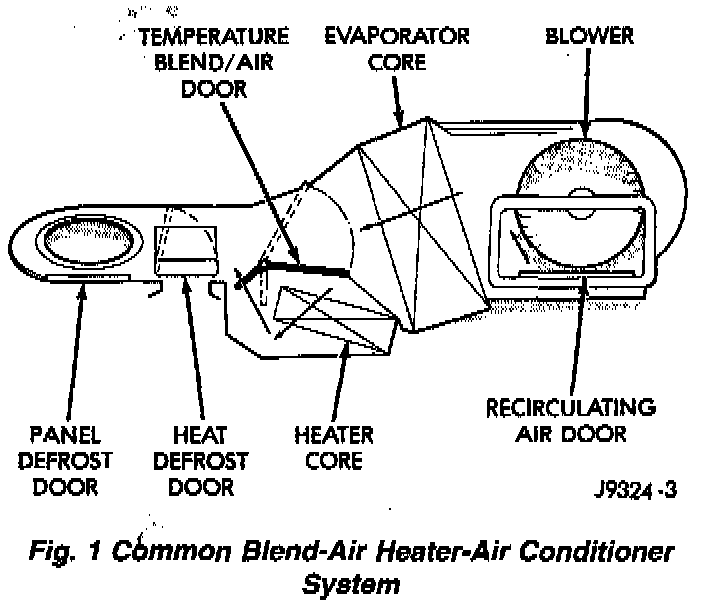
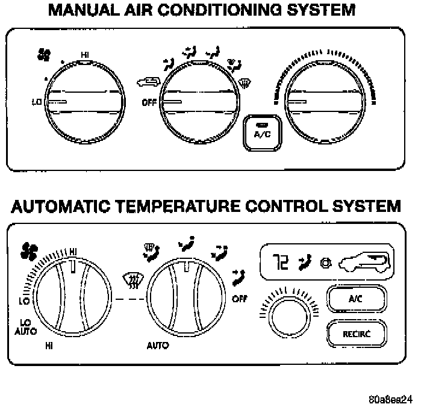

General Component Information
A manual temperature control type heating-air conditioning system is standard factory-installed equipment on this model. An electronically controlled Automatic Temperature Control (ATC) type heating- air conditioning system is an available factory-installed option.Common Blend-Air Heater-Air Conditioner System:

All vehicles are equipped with a common heater- A/C housing assembly. The system combines air conditioning, heating, and ventilating capabilities in a single unit housing mounted under the instrument panel
Outside fresh air enters the vehicle through the cowl top opening at the base of the windshield, and passes through a plenum chamber to the heater-A/C system blower housing. Air flow velocity can then be adjusted with the blower motor speed selector switch on the heater-A/C control panel. The air intake openings must be kept free of snow, ice, leaves, and other obstructions for the heater-A/C system to receive a sufficient volume of outside air.
Fig.2 Heater-Air Conditioner Control System:

Both the manual and ATC heater and air conditioner are blend-air type systems. In a blend-air system, a blend-air door controls the amount of cooled or unconditioned air is allowed to flow through, or around, the heater core. A temperature control knob on the heater-A/C control panel determines the discharge air temperature by energizing the blend-air door motor, which operates the blend-air door. This allows an almost immediate control of the output air temperature of the system.
The mode control knob on the heater-A/C control panel is used to direct the conditioned air to the selected system outlets. On manual temperature control systems, the mode control knob switches engine vacuum to control the mode doors, which are operated by vacuum actuator motors. On ATC systems, the mode control knob switches electrical current to control the mode doors, which are operated by electronic actuator motors.
The outside air intake can be shut off by selecting the recirculation mode with the mode control knob. This will open the recirculating air door and recirculate the air that is already inside the vehicle.
The air conditioner for all models is designed for the use of non-CFC, R-134a refrigerant. The air conditioning system has an evaporator to cool and dehumidify the incoming fresh or recirculated air prior to blending it with the heated air. This air conditioning system uses a fixed orifice tube in the condenser outlet line to meter refrigerant flow to the evaporator coil. To maintain minimum evaporator temperature and prevent evaporator freezing, a fixed pressure setting switch on the accumulator cycles the compressor clutch.